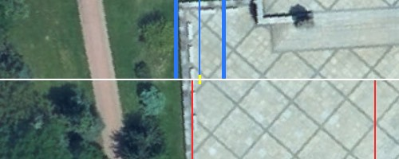
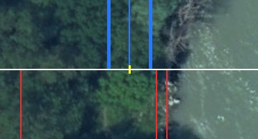
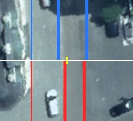
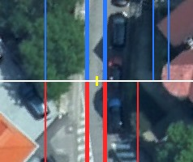
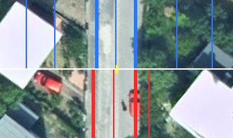
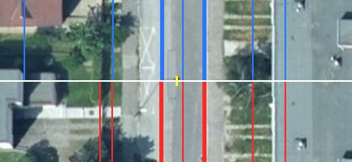

Pasporty slovenských měst: bez pasportu (nahoře, modře) a s pasportem (dole, červeně)
Řez zleva (A) doprava (B), ±10 m podél ulice, 10 px = 1 m. Silné čáry = okraje vozovky, tenké = ostatní hranice, žlutá = střed řezu, * = odhad. Ortofoto © GKÚ Bratislava, NLC (ZBGIS, CC BY 4.0).

1 · (bez názvu) (bratislava)
bez pasportu: pruh 3* · pruh 3*
s pasportem: plocha 22.88

12 · (bez názvu) (bratislava)
bez pasportu: pruh 3* · pruh 3*
s pasportem: chodnik 19.5 · zelen 1.5*

20 · Medená (bratislava)
bez pasportu: chodnik 4.4* · pruh 4.7
s pasportem: nezname 5.55* · pruh 3.2

25 · Vlčkova (bratislava)
bez pasportu: chodnik 5.05* · pruh 2.2 · chodnik 6* · plocha 1.9*
s pasportem: chodnik 5.05* · pruh 2.2 · chodnik 4.1*

27 · Brižitská (dubravka)
bez pasportu: plocha 4.05* · chodnik 6* · pruh 2.8 · pruh 2.8 · chodnik 6* · zelen 5.1*
s pasportem: pruh 3.04 · pruh 3.04 · chodnik 2.09*

37 · Tranovského (dubravka)
bez pasportu: zelen 10.85* · chodnik 6* · pruh 2.65 · pruh 2.65 · chodnik 6* · zelen 3.95*
s pasportem: zelen 1.59* · chodnik 6* · pruh 2.65 · pruh 2.65 · chodnik 6* · zelen 3.95*